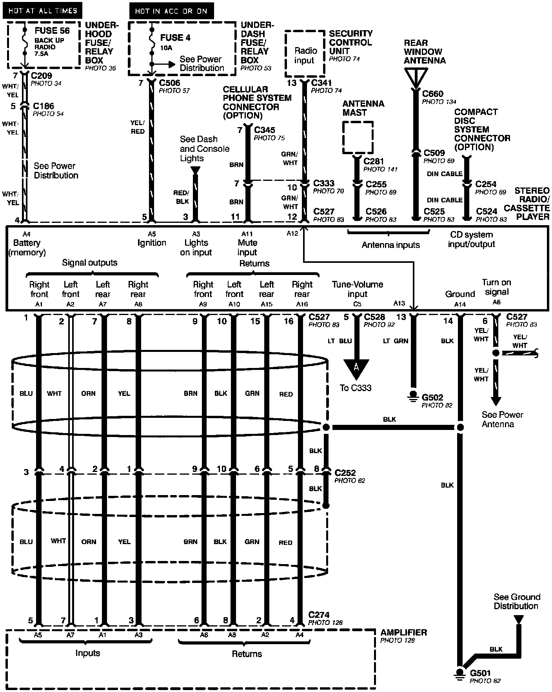
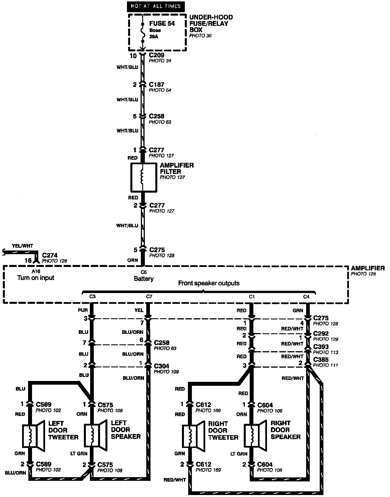
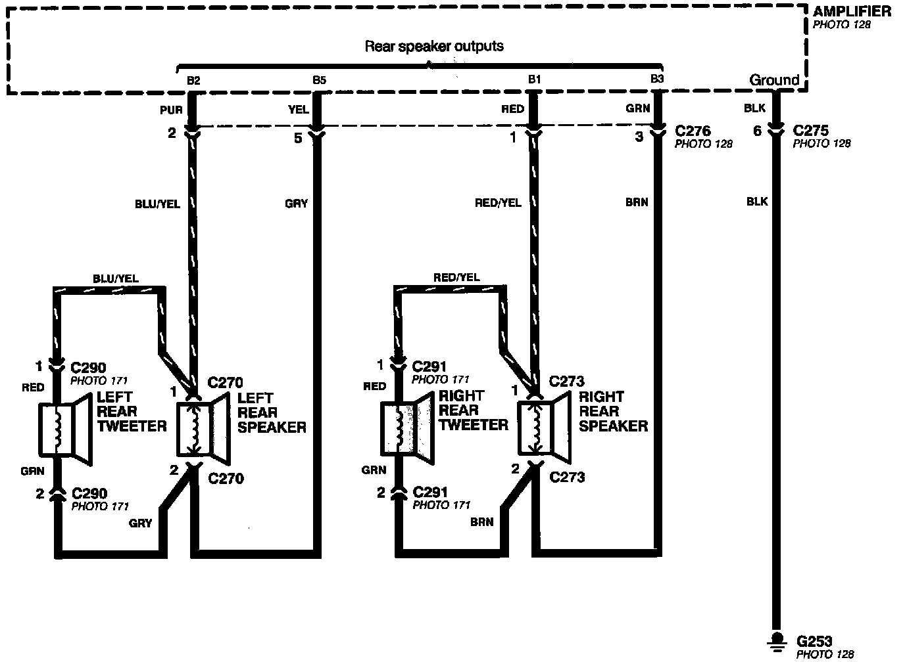

Operation CHARM
: Car repair manuals for everyone.
Home
>>
Acura
>>
1994
>>
Legend Coupe V6-3206cc 3.2L SOHC FI
>>
Repair and Diagnosis
>>
Accessories and Optional Equipment
>>
Radio, Stereo, and Compact Disc
>>
Radio/Stereo
>>
Diagrams
>>
Electrical Diagrams
>>
LS Model
LS Model
Stereo Sound System- LS Model (Part 1 Of 3):

Stereo Sound System- LS Model (Part 2 Of 3):

Stereo Sound System- LS Model (Part 3 Of 3):
